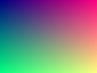

Block-level paragraph with bold, italic, and an inline-block box on the baseline.
Justified wrapping text so that line breaking is exercised across a known width: the quick brown fox jumps over the lazy dog, and then keeps running until the line has to break somewhere sensible.
